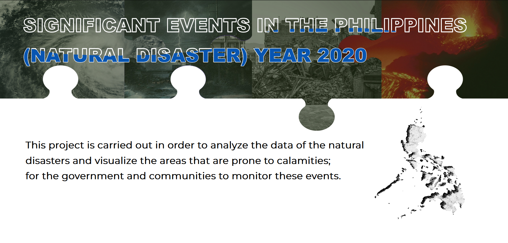
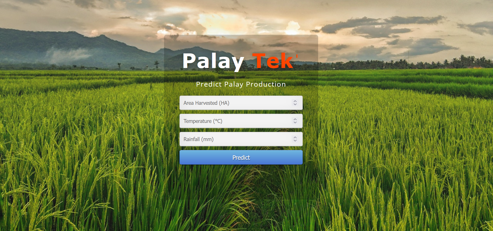
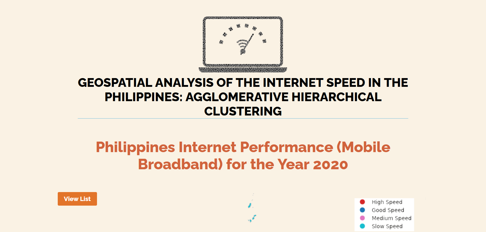
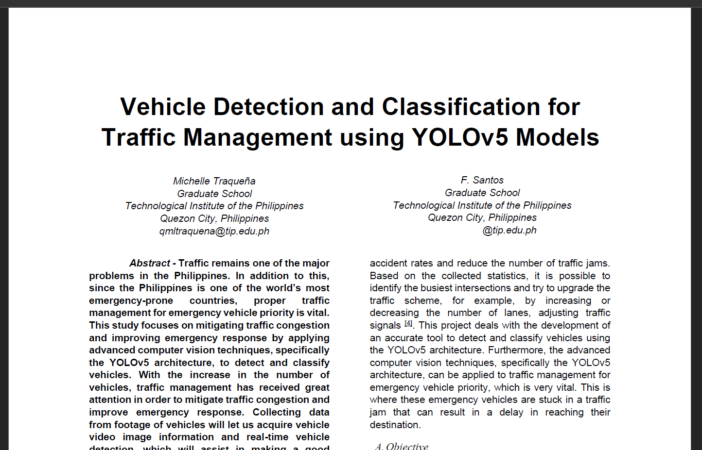
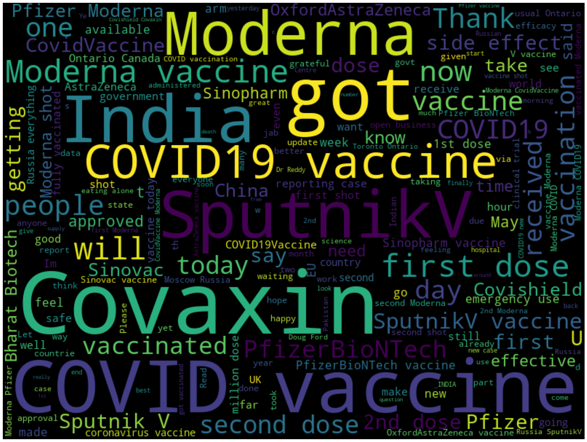

Portfolio
Take a peek.
Time-Series Application for Local Artisans
Protoype (Capstone Project)
To address the issue surrounding the local artisans' management of their raw materials, the team came up
with a proposal to develop a machine learning model and a forecasting tool. The concept is called TALA,
or Time-series Application for Local Artisans.
Only five stores agreed to provide their data while ensuring that pertinent information that could
potentially identify the stores will remain confidential.
In the TALA wireframe, three models were built for each of the five stores. The best model based on the
validation metrics were then be selected.
Link
- username: user01
- password: root
Visualization of the Significant Events in the PH 2020

Deploying analytics and data science can help to address and solve complex problems such as emergency
response by combining data visualization technology with geospatial and machine learning-driven
techniques utilizing historical data collection, allowing for proactive preparedness and responsiveness
in an expedited timeline.
This project used:
- Geopandas, the Python library for geography, for geospatial visualizations in mapping.
- Dataset from the United Nations Office for the Coordinationof Humanitarian Affairs (OCHA) in the
Philippines: Philippines 2020: Significant Events.
- Jenks optimization method (or Fisher-Jenks algorithm) to cluster the provinces.
Link
Palay Tek'

In the project, machine learning methods are applied to predict Palay production and deployed using a
flask. Basically, the app will predict the palay production based on area in hectares, temperature in
degrees Celsius, and rainfall in millimeters.
This project used:
- Data from the Philippine Rice Research Institute knowledge portal are publicly available and include
the country's annual Palay Production (MT) from 1970 to 2021.
- Climate data for rainfall and average temperature are available from the Climate Change Knowledge
Portal. It spans the years 1970 until 2021.
- Random Forest Regressor, Linear Regression, and Decision Tree Regressor. Of all the methods
performed, Random Forest Regressor achieved the highest accuracy score.
Link
Geospatial Analysis of the Internet Speed in the Philippines

This project aims to identify the cluster of internet speed of the provinces in the country based on the
Speedtest by Ookla Global Mobile Network Performance Map Tiles available on their GitHub account.
This project used:
- Geopandas, the Python library for geography, for geospatial visualizations in mapping.
- The
dataset provides global mobile (cellular) network performance, and data is provided in both
Shapefile format. It covers the quarterly internet speed for the year 2020.
- Agglomerative Hierarchical Clustering
Link
Vehicle Detection and Classification for Traffic Management using YOLOv5 Models

This project deals with the development of an accurate tool to detect and classify vehicles using the
YOLOv5 architecture. Furthermore, the advanced computer vision techniques, specifically the YOLOv5
architecture, can be applied to traffic management for emergency vehicle priority, which is very vital.
This project used:
- Dataset contains 627 images of various vehicle classes for object detection. These images are
derived from the Open Images open source computer vision datasets.
- Used two different models—YOLOv5s and YOLOv5m.
Link
Sentiment Analysis: COVID-19 Vaccine Tweets

Natural Language Processing: Utilizing the TextBlob API and word cloud visualizations to analyze the
discourse surrounding global vaccination.
Link